Enterprise UX · B2B · Fintech · Greenfield platform
Deposit Broker Portal: from eight weeks of follow-ups to ten minutes.
We lost a key investment client, and brokers told us why: slow, opaque follow-ups. I led the UX strategy and design of a net-new broker portal that made servicing transparent and self-serve.
What is Oaken Financial?
Oaken is a Canadian direct-to-consumer savings and investment brand, owned by Home Trust and now part of Fairstone Bank. It offers high-interest savings accounts and GICs in registered (TFSA, RSP, RIF) and non-registered forms.
A large share of those deposits arrive through brokerages and broker agencies across Canada. The products were competitive. Servicing them was not.
The product wasn't broken. The servicing was.
Servicing was
- Manual
- Fragmented
- Opaque
- High-touch and slow
It ran on
- Emails and phone calls
- Spreadsheet tracking
- Cross-team coordination
- Manual updates across SAP, DASH and Dynamics
And there was
- No central broker portal
- Zero automation
- No lifecycle transparency
- Heavy dependence on internal servicing teams
We lost a key investment client, and broker feedback made the cause undeniable.
Why it was a structural risk, not a UX inconvenience
The Canadian deposit brokerage landscape
How the market works
- Brokers spread deposits across many financial institutions
- GICs are placed on rate, speed and servicing reliability
- Turnaround time and status clarity drive broker loyalty
What competitors offered
- Digital submission flows
- Faster processing
- Automated status updates
- Cleaner broker interfaces
Many traditional institutions still ran on legacy processes, but expectations were shifting toward transparency and self-serve. To compete, our servicing had to match our products.
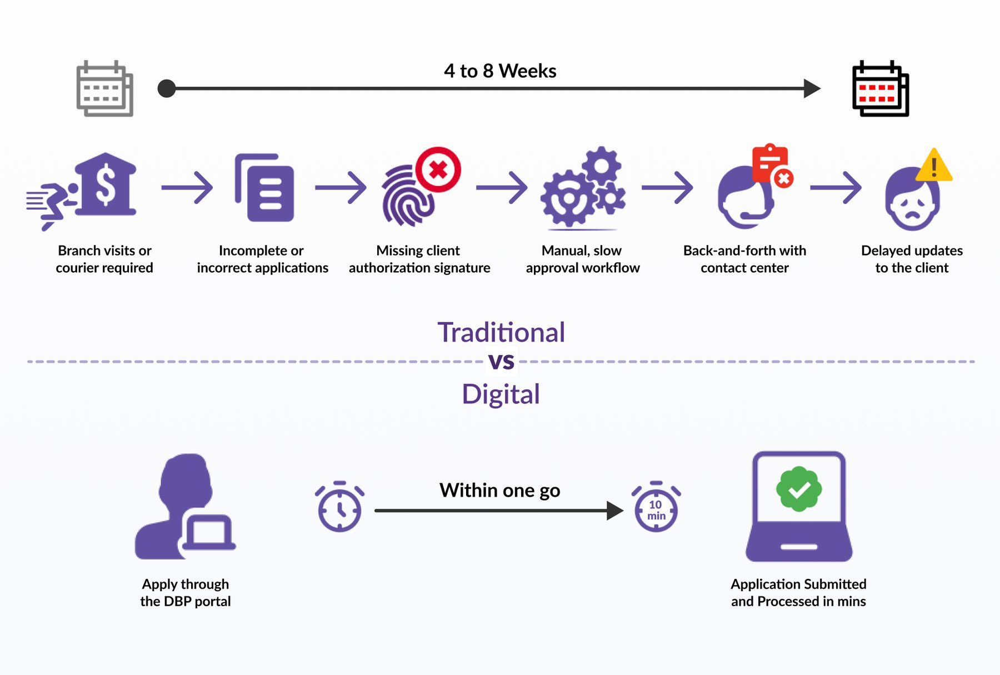
Internal teams were acting as human middleware
We mapped workflows and interviewed brokers, servicing teams and operations.
Key friction points
- Brokers couldn't see what stage an application was at
- Several email threads for every investment
- Documents exchanged by hand
- The same data entered again and again across systems
- Conflicting statuses between SAP, DASH and Dynamics
- Internal teams relaying information between systems and brokers
The journey was high-touch by necessity, not by design. That meant slow turnaround, repeat questions, overloaded teams and frustrated brokers. It was reactive, not orchestrated.
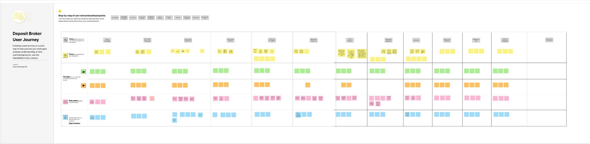
User journey mapping
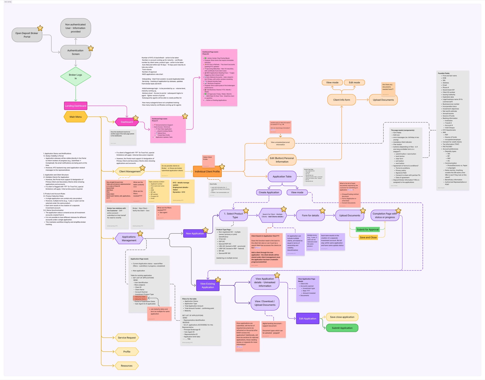
System flow
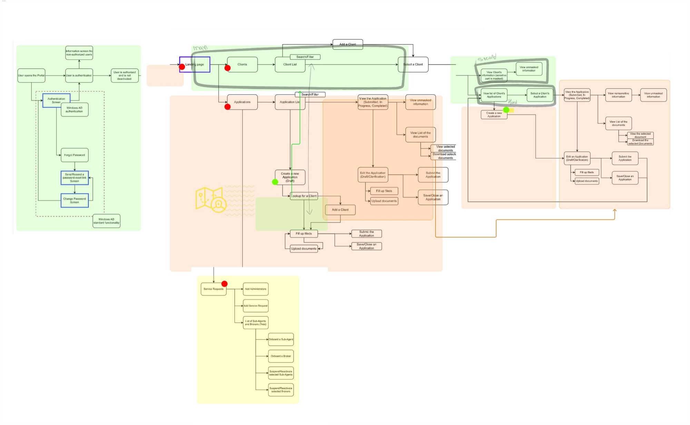
Transparent, system-orchestrated, low-touch
North star: replace manual, opaque servicing with transparent, system-orchestrated, low-touch broker enablement.
What the portal introduced
- Real-time application status tracking
- Structured lifecycle views for GIC and deposit investments
- Central visibility of communications
- Far less dependence on email
- Clear next-step guidance
Human intervention became the exception, not the norm.
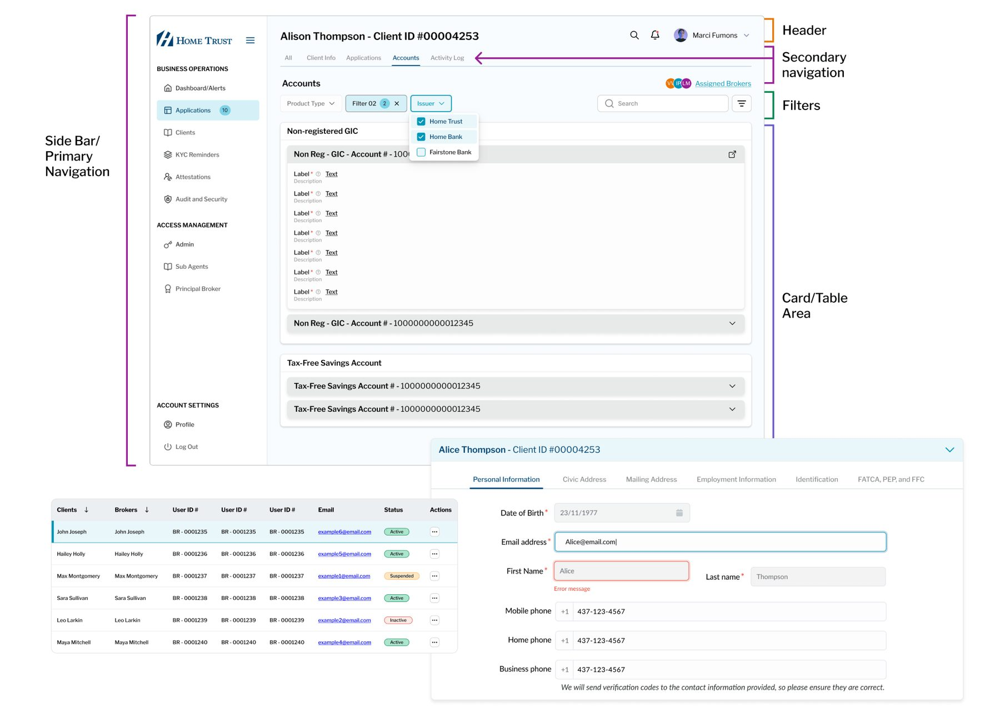
Deep research and stakeholder alignment
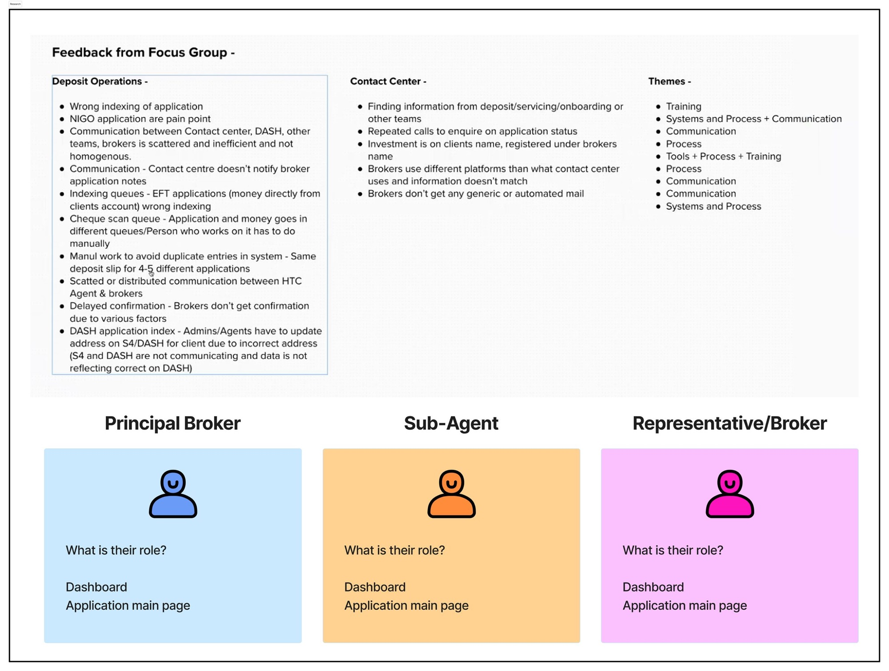
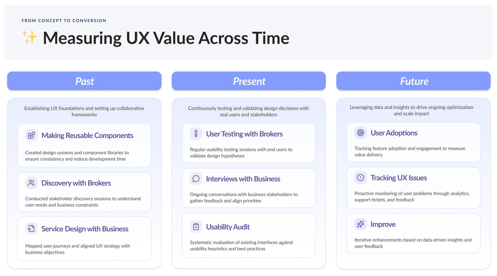
Jobs to be done
Brokers
"When I place a deposit investment, I want to track its progress clearly, so I can confidently update my client."
"When there's a delay, I want to understand why immediately, so I don't need to chase internal teams."
"When I submit documents, I want confirmation and status clarity, so I know the investment is moving."
Internal servicing teams
"When broker volume grows, I want structured system workflows, so I'm not coordinating status updates by hand."
"When exceptions occur, I want them surfaced clearly, so I only step in where a person adds value."
Confidence and control over decoration
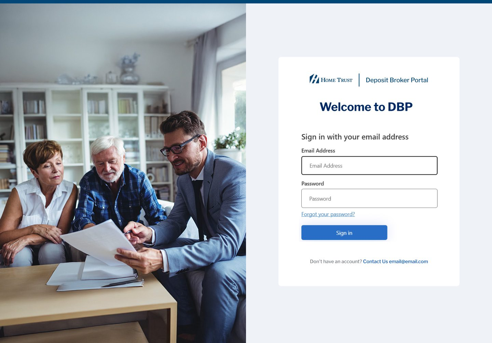
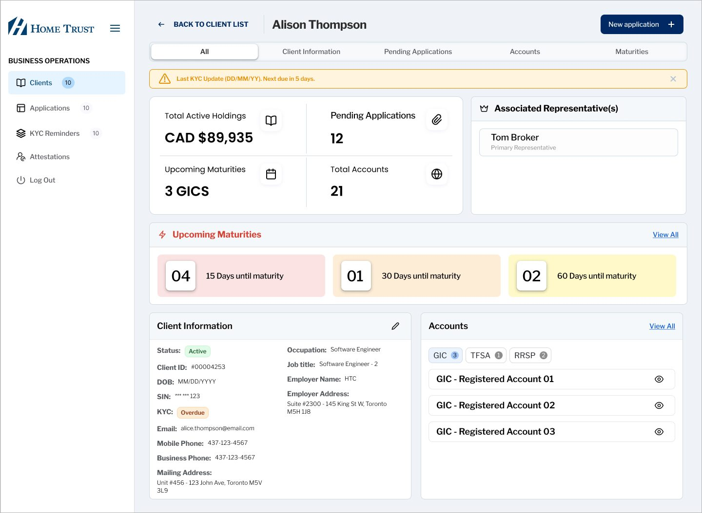
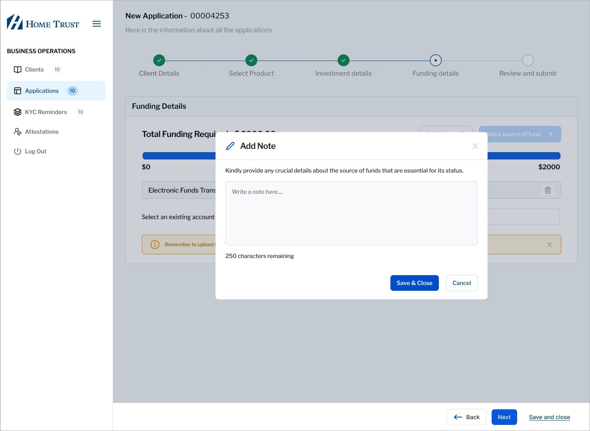
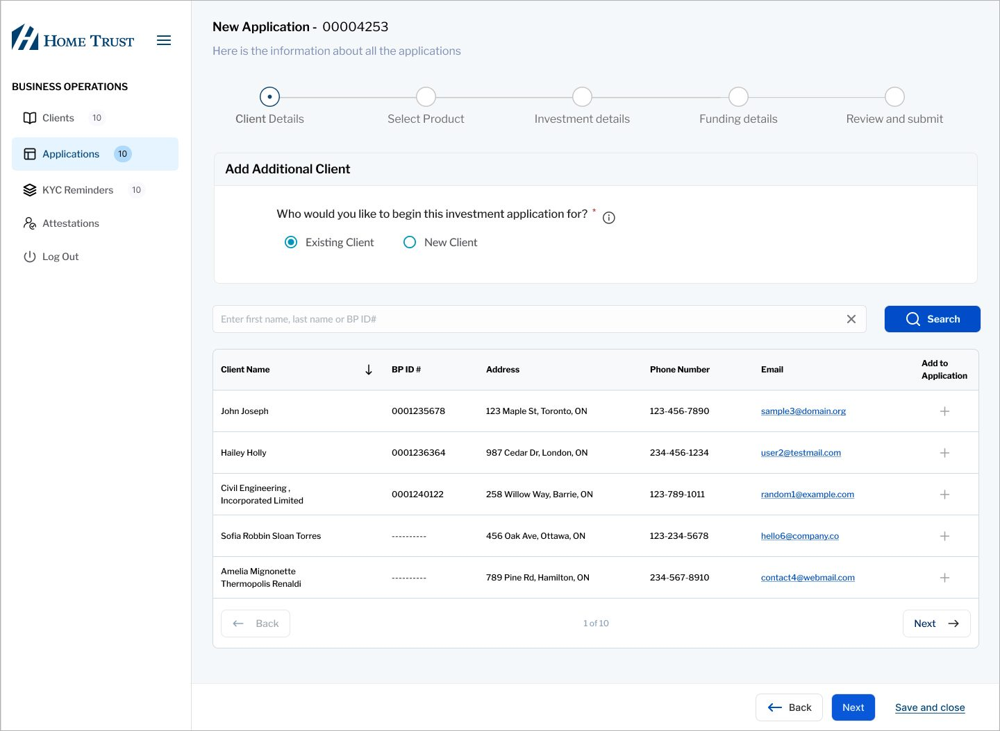
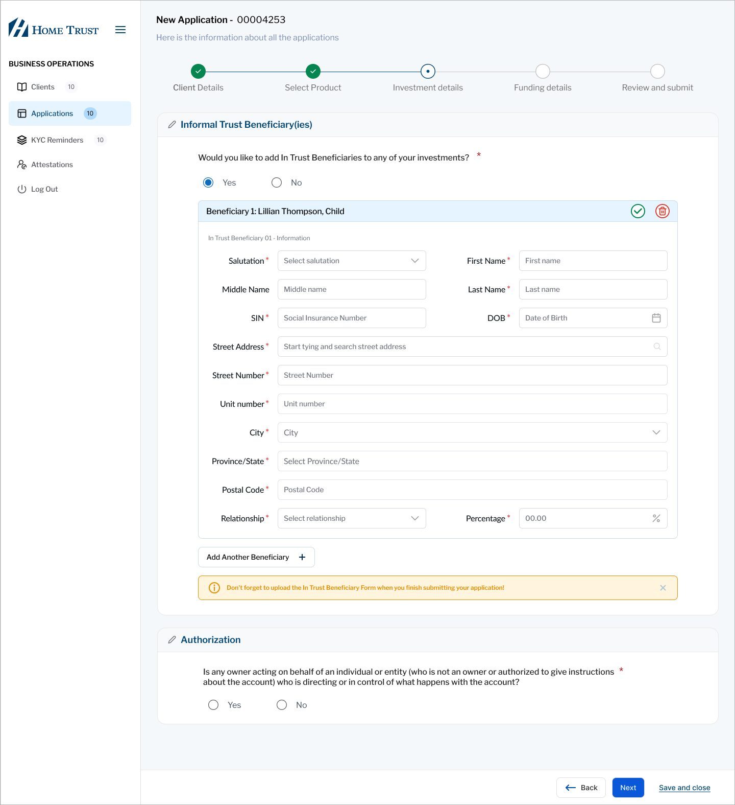
Designed to evolve, not to ship once
Before launch
- Workflow validation with operations
- Edge-case scenario testing
- Usability walkthroughs with broker representatives
- Engineering feasibility reviews
- System-trigger validation cycles
After launch
- Monitoring broker inquiry volume
- Tracking turnaround metrics
- Finding the next automation opportunities
Handshake with engineering
- Detailed workflow diagrams across SAP, DASH and Dynamics
- Documented status states
- Clear inputs for API and trigger mapping
- Documented error states
- Components aligned to the design system
We turned servicing logic into structured state models, removed redundant handoffs and standardized terms across business and engineering. That cut rework and sped up delivery.
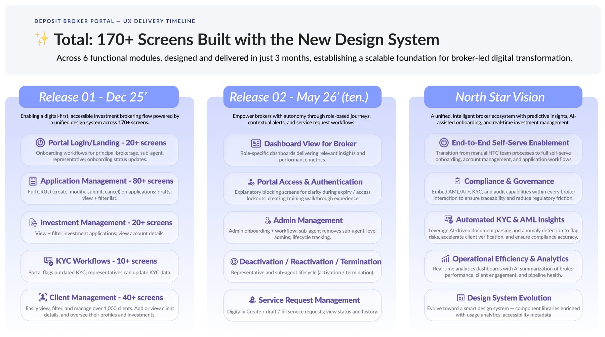
System-level transformation, not screen-level design
- Framed the problem as a trust and revenue risk, not a usability issue
- Secured cross-functional buy-in
- Drove enterprise workflow mapping
- Owned UX architecture across 170+ screens
- Built in design-system scalability
- Aligned business, engineering and operations
What I learned
- In broker-based distribution, servicing experience directly affects revenue.
- Transparency reduces operational burden.
- Automation multiplies trust.
- Aligning enterprise workflows matters more than interface polish.
- UX leadership in financial services has to think in systems, not features.
Business and product impact
- Self-serve, transparent workflows replaced tedious follow-ups
- Brokers rely far less on internal teams
- Real-time status lets brokers make promises to clients again
- The gap that cost us a key client is closed
Not just a portal: a future-ready servicing foundation that high-value partners now see as modern and dependable.